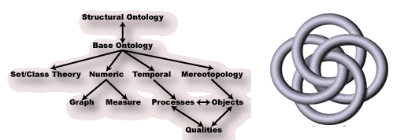

Knowledge-based Reasoning in SUMO and Cyc

Reasoning Approach
Convert higher-order constructs to first-order
Impose sort constraints
Tolerate incompleteness wrt ontology-specific reasoning
Application of ATP
Problems are converted to
TPTP format
ATP systems
used to find proofs and models
IDV
used to view derivations
Problems added to the
TPTP problem library